Last updated: 2019-06-12
Checks: 7 0
Knit directory: tcga_macs/
This reproducible R Markdown analysis was created with workflowr (version 1.4.0). The Checks tab describes the reproducibility checks that were applied when the results were created. The Past versions tab lists the development history.
Great! Since the R Markdown file has been committed to the Git repository, you know the exact version of the code that produced these results.
Great job! The global environment was empty. Objects defined in the global environment can affect the analysis in your R Markdown file in unknown ways. For reproduciblity it’s best to always run the code in an empty environment.
The command set.seed(20190409) was run prior to running the code in the R Markdown file. Setting a seed ensures that any results that rely on randomness, e.g. subsampling or permutations, are reproducible.
Great job! Recording the operating system, R version, and package versions is critical for reproducibility.
Nice! There were no cached chunks for this analysis, so you can be confident that you successfully produced the results during this run.
Great job! Using relative paths to the files within your workflowr project makes it easier to run your code on other machines.
Great! You are using Git for version control. Tracking code development and connecting the code version to the results is critical for reproducibility. The version displayed above was the version of the Git repository at the time these results were generated.
Note that you need to be careful to ensure that all relevant files for the analysis have been committed to Git prior to generating the results (you can use wflow_publish or wflow_git_commit). workflowr only checks the R Markdown file, but you know if there are other scripts or data files that it depends on. Below is the status of the Git repository when the results were generated:
Ignored files:
Ignored: .DS_Store
Ignored: .Rhistory
Ignored: .Rproj.user/
Ignored: analysis/.DS_Store
Ignored: data/.DS_Store
Ignored: data/GSE46903_Affymetrix_Reanalyzed_data.txt.gz
Ignored: data/GSE46903_Affymetrix_metadata.txt.gz
Ignored: data/GSE46903_RAW.tar
Ignored: data/GSE46903_non-normalized.txt
Ignored: data/GSE46903_nonnormalized copy.tsv
Ignored: data/gse_46903.rds
Ignored: data/htseq_counts/
Ignored: output/dge_frame.csv
Ignored: output/downreg_c1.csv
Ignored: output/downreg_c2.csv
Ignored: output/downreg_c3.csv
Ignored: output/downreg_c4.csv
Ignored: output/downreg_c5.csv
Ignored: output/downreg_c6.csv
Ignored: output/downreg_c7.csv
Ignored: output/expr_matrix.rds
Ignored: output/expression_set.rds
Ignored: output/filtered.total.phenodata.rds
Ignored: output/flat_total_counts.rds
Ignored: output/flat_total_pheno.rds
Ignored: output/gset_ids_complete.rds
Ignored: output/km_cluster_assignments.csv
Ignored: output/mac_eset.rds
Ignored: output/mac_eset_w_clusters.rds
Ignored: output/nested_list_dge_top50_updown.rds
Ignored: output/normalized_probe_intensities.Rds
Ignored: output/processed_lumi_46903.Rds
Ignored: output/processed_lumi_46903.tsv
Ignored: output/processed_lumi_exprs.txt
Ignored: output/score_matrix.csv
Ignored: output/selected.total.counts.rds
Ignored: output/table_c1.csv
Ignored: output/table_c2.csv
Ignored: output/table_c3.csv
Ignored: output/table_c4.csv
Ignored: output/table_c5.csv
Ignored: output/table_c6.csv
Ignored: output/table_c7.csv
Ignored: output/tcga_counts_dataframe_list.rds
Ignored: output/tcga_counts_list.rds
Ignored: output/tcga_gdc_manifest.rds
Ignored: output/tcga_metadata_list.rds
Ignored: output/tcga_total_counts.csv
Ignored: output/upreg_c1.csv
Ignored: output/upreg_c2.csv
Ignored: output/upreg_c3.csv
Ignored: output/upreg_c4.csv
Ignored: output/upreg_c5.csv
Ignored: output/upreg_c6.csv
Ignored: output/upreg_c7.csv
Untracked files:
Untracked: data/160genes_ensembl.gencode28.txt
Untracked: data/gencode.v22.primary_assembly.annotation.gtf.geneinfo
Untracked: data/kyle.gdc_tcga_bam_metadata.txt
Note that any generated files, e.g. HTML, png, CSS, etc., are not included in this status report because it is ok for generated content to have uncommitted changes.
These are the previous versions of the R Markdown and HTML files. If you’ve configured a remote Git repository (see ?wflow_git_remote), click on the hyperlinks in the table below to view them.
| File | Version | Author | Date | Message |
|---|---|---|---|---|
| Rmd | 6288da1 | mleukam | 2019-06-12 | partially working GVSA analysis |
| html | f7f6d34 | mleukam | 2019-06-10 | Build site. |
| Rmd | b3f3025 | mleukam | 2019-06-10 | start of gsea notebook, reading in files |
| Rmd | 64eaee8 | mleukam | 2019-06-10 | multiple updates |
Clear environment
# clear environment
rm(list = ls())Load packages
library("tidyverse")── Attaching packages ──────────────────────────────────────────────── tidyverse 1.2.1 ──✔ ggplot2 3.1.1 ✔ purrr 0.3.2
✔ tibble 2.1.3 ✔ dplyr 0.8.1
✔ tidyr 0.8.3 ✔ stringr 1.4.0
✔ readr 1.3.1 ✔ forcats 0.4.0── Conflicts ─────────────────────────────────────────────────── tidyverse_conflicts() ──
✖ dplyr::filter() masks stats::filter()
✖ dplyr::lag() masks stats::lag()library("edgeR")Loading required package: limmalibrary("limma")
library("GSVA")
library("GenomicDataCommons")Loading required package: magrittr
Attaching package: 'magrittr'The following object is masked from 'package:purrr':
set_namesThe following object is masked from 'package:tidyr':
extract
Attaching package: 'GenomicDataCommons'The following objects are masked from 'package:dplyr':
count, filter, selectThe following object is masked from 'package:tidyr':
expandThe following object is masked from 'package:stats':
filterRead in custom gene lists
up_files <- list.files("output/", "^upreg_c")
down_files <- list.files("output/", "downreg_c")
file_list <- c(up_files, down_files)
path_list <- paste0("output/", file_list)
dge_list <- map(path_list, read_csv)Parsed with column specification:
cols(
gene = col_character(),
logFC = col_double(),
AveExpr = col_double(),
t = col_double(),
P.Value = col_double(),
adj.P.Val = col_double(),
B = col_double()
)
Parsed with column specification:
cols(
gene = col_character(),
logFC = col_double(),
AveExpr = col_double(),
t = col_double(),
P.Value = col_double(),
adj.P.Val = col_double(),
B = col_double()
)
Parsed with column specification:
cols(
gene = col_character(),
logFC = col_double(),
AveExpr = col_double(),
t = col_double(),
P.Value = col_double(),
adj.P.Val = col_double(),
B = col_double()
)
Parsed with column specification:
cols(
gene = col_character(),
logFC = col_double(),
AveExpr = col_double(),
t = col_double(),
P.Value = col_double(),
adj.P.Val = col_double(),
B = col_double()
)
Parsed with column specification:
cols(
gene = col_character(),
logFC = col_double(),
AveExpr = col_double(),
t = col_double(),
P.Value = col_double(),
adj.P.Val = col_double(),
B = col_double()
)
Parsed with column specification:
cols(
gene = col_character(),
logFC = col_double(),
AveExpr = col_double(),
t = col_double(),
P.Value = col_double(),
adj.P.Val = col_double(),
B = col_double()
)
Parsed with column specification:
cols(
gene = col_character(),
logFC = col_double(),
AveExpr = col_double(),
t = col_double(),
P.Value = col_double(),
adj.P.Val = col_double(),
B = col_double()
)
Parsed with column specification:
cols(
gene = col_character(),
logFC = col_double(),
AveExpr = col_double(),
t = col_double(),
P.Value = col_double(),
adj.P.Val = col_double(),
B = col_double()
)
Parsed with column specification:
cols(
gene = col_character(),
logFC = col_double(),
AveExpr = col_double(),
t = col_double(),
P.Value = col_double(),
adj.P.Val = col_double(),
B = col_double()
)
Parsed with column specification:
cols(
gene = col_character(),
logFC = col_double(),
AveExpr = col_double(),
t = col_double(),
P.Value = col_double(),
adj.P.Val = col_double(),
B = col_double()
)
Parsed with column specification:
cols(
gene = col_character(),
logFC = col_double(),
AveExpr = col_double(),
t = col_double(),
P.Value = col_double(),
adj.P.Val = col_double(),
B = col_double()
)
Parsed with column specification:
cols(
gene = col_character(),
logFC = col_double(),
AveExpr = col_double(),
t = col_double(),
P.Value = col_double(),
adj.P.Val = col_double(),
B = col_double()
)
Parsed with column specification:
cols(
gene = col_character(),
logFC = col_double(),
AveExpr = col_double(),
t = col_double(),
P.Value = col_double(),
adj.P.Val = col_double(),
B = col_double()
)
Parsed with column specification:
cols(
gene = col_character(),
logFC = col_double(),
AveExpr = col_double(),
t = col_double(),
P.Value = col_double(),
adj.P.Val = col_double(),
B = col_double()
)names(dge_list) <- str_replace_all(file_list, ".csv", "")Read in lookup table for features, gencode v22 (used by GDC to label features)
gencode_gtf <- read_tsv("data/gencode.v22.primary_assembly.annotation.gtf.geneinfo")Parsed with column specification:
cols(
gene_id = col_character(),
gene_type = col_character(),
gene_status = col_character(),
gene_name = col_character(),
level = col_double(),
havana_gene = col_character()
)Warning: 10327 parsing failures.
row col expected actual file
5304 -- 6 columns 5 columns 'data/gencode.v22.primary_assembly.annotation.gtf.geneinfo'
12445 -- 6 columns 5 columns 'data/gencode.v22.primary_assembly.annotation.gtf.geneinfo'
12913 -- 6 columns 5 columns 'data/gencode.v22.primary_assembly.annotation.gtf.geneinfo'
13082 -- 6 columns 5 columns 'data/gencode.v22.primary_assembly.annotation.gtf.geneinfo'
13310 -- 6 columns 5 columns 'data/gencode.v22.primary_assembly.annotation.gtf.geneinfo'
..... ... ......... ......... ...........................................................
See problems(...) for more details.# read in T-cell inflammation signature
tcell <- read_tsv("data/160genes_ensembl.gencode28.txt", col_names = FALSE)Parsed with column specification:
cols(
X1 = col_character(),
X2 = col_character(),
X3 = col_character()
)# convert to gene_id
gene_ids <- gencode_gtf %>%
dplyr::select(gene_id, gene_name)
tcell <- tcell %>% dplyr::rename(gene_name = X1)
tcell_gset <- tcell %>% left_join(gene_ids, by = "gene_name") %>%
pull(gene_id)
tcell_gset <- tcell_gset[!is.na(tcell_gset)]# define function that uses lookup table to convert gene symbols to gene id
# then returns a list of gene ids that define the gene set
ensemblgset <- function(df, gtf){
gene_ids <- gtf %>%
dplyr::select(gene_id, gene_name) %>%
dplyr::rename(gene = gene_name)
gset <- df %>% left_join(gene_ids) %>%
pull(gene_id)
gset
}
# apply function to list of gene sets
gset_ids <- map(dge_list, function(x){ensemblgset(x, gtf = gencode_gtf)})Joining, by = "gene"
Joining, by = "gene"
Joining, by = "gene"
Joining, by = "gene"
Joining, by = "gene"
Joining, by = "gene"
Joining, by = "gene"
Joining, by = "gene"
Joining, by = "gene"
Joining, by = "gene"
Joining, by = "gene"
Joining, by = "gene"
Joining, by = "gene"
Joining, by = "gene"# remove nas (small number of gene symbols do not map to gencode gene ids)
gset_ids <- map(gset_ids, function(x){
x[!is.na(x)]
})
# add T-cell signature to gset list
gset_ids_complete <- c(gset_ids, tcell_gset = list(tcell_gset))Preprocessing following methods outlined here: https://f1000research.com/articles/5-1408/v3
Read in data
total_counts <- read_csv("output/tcga_total_counts.csv")Parsed with column specification:
cols(
.default = col_double(),
gene = col_character()
)See spec(...) for full column specifications.# filter for protein coding genes
total_counts_prcode <- total_counts %>%
dplyr::rename(gene_id = gene) %>%
left_join(gencode_gtf, by = "gene_id") %>%
dplyr::filter(gene_type == "protein_coding") %>%
dplyr::select(-gene_name, -gene_type, -gene_status, -level, -havana_gene) %>%
dplyr::select(gene_id, everything())
nrow(total_counts_prcode)[1] 19814Normalisation by the method of trimmed mean of M-values (TMM) is performed using the calcNormFactors function in edgeR.
# normalize by log cpm using EdgeR
df_data <- total_counts_prcode %>%
dplyr::select(-gene_id) %>% as.matrix()
df_names <- total_counts_prcode %>% dplyr::select(gene_id)
out_data <- cpm(df_data, log = FALSE) %>% as_tibble()
total_counts_prcode_cpm <- bind_cols(df_names, out_data)# Density plots
# tidy data
tidy_cpm <- total_counts_prcode_cpm %>%
gather(key = "sampleID", value = "intensity", -gene_id)
tidy_cpm <- tidy_cpm %>%
mutate(group = str_sub(sampleID, 1, 4))
# representative plots
brca_cpm <- tidy_cpm %>%
dplyr::filter(group == "BRCA")
dplot_brca <- ggplot(brca_cpm, aes(intensity)) +
geom_density() +
theme(legend.position = "none")
dplot_brca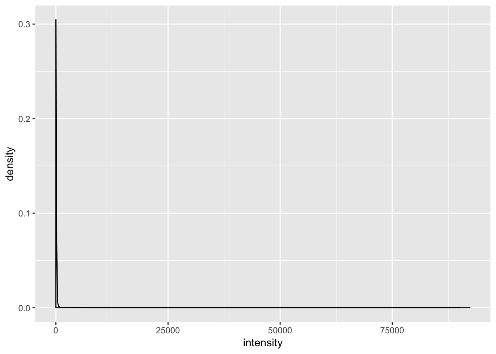
gbm_cpm <- tidy_cpm %>%
dplyr::filter(grepl("GBM*", group))
dplot_gbm <- ggplot(gbm_cpm, aes(intensity)) +
geom_density() +
theme(legend.position = "none") +
xlim(-6, 15)
dplot_gbmWarning: Removed 1633339 rows containing non-finite values (stat_density).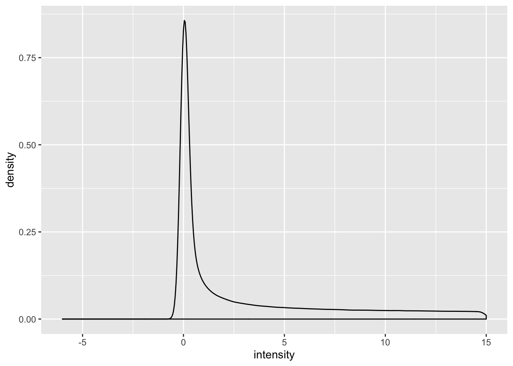
# move gene names to rownames
totcounts_prcode_cpm_matrix <- total_counts_prcode_cpm %>%
as.data.frame() %>%
column_to_rownames(var = "gene_id")
totcounts_prcode_cpm_matrix[1:5, 1:5] BRCA1 BRCA2 BRCA3 BRCA4 BRCA5
ENSG00000000003.13 37.019035 86.2823791 70.916573 55.8841542 35.525131
ENSG00000000005.5 4.102186 0.5067543 29.356090 0.1215401 2.208254
ENSG00000000419.11 23.576924 37.8277212 24.424392 17.2100831 24.495930
ENSG00000000457.12 29.538578 38.3344755 21.162604 9.4315145 34.270167
ENSG00000000460.15 9.708980 19.2566650 4.588352 2.2606465 13.539130# filter out genes that aren't at least expressed greater than 1 in at least 45 cases (45 being about the size of the smallest group)
total_cpm_stats <- data.frame(
total = apply(totcounts_prcode_cpm_matrix, 1, function(x) sum(x > 1, na.rm = TRUE)))
keep <- which(total_cpm_stats$total >= 45)
dim(totcounts_prcode_cpm_matrix)[1] 19814 11093total_cpm_filtered = totcounts_prcode_cpm_matrix[keep,]
dim(total_cpm_filtered)[1] 18138 11093Normalisation by the method of trimmed mean of M-values (TMM)12 is performed using the calcNormFactors function in edgeR. The normalisation factors calculated here are used as a scaling factor for the library sizes.
# get normalization factors
norm_factors <- calcNormFactors(total_cpm_filtered, method = "TMM")
# apply factor to each column
total_cpm_norm <- map2_dfc(total_cpm_filtered, norm_factors, `*`)
total_cpm_norm <- as.data.frame(total_cpm_norm)
rownames(total_cpm_norm) <- rownames(total_cpm_filtered)
total_cpm_norm[1:5, 1:5] BRCA1 BRCA2 BRCA3 BRCA4 BRCA5
ENSG00000000003.13 44.766216 93.3727156 61.438379 48.5508142 41.266530
ENSG00000000005.5 4.960673 0.5483974 25.432569 0.1055912 2.565141
ENSG00000000419.11 28.510999 40.9362502 21.160005 14.9517079 28.454842
ENSG00000000457.12 35.720282 41.4846475 18.334164 8.1938738 39.808745
ENSG00000000460.15 11.740833 20.8390998 3.975106 1.9639955 15.727258total_log_cpm_filtered_norm <- log2(total_cpm_norm)# Density plots
# tidy data
final_total_df <- total_log_cpm_filtered_norm %>%
rownames_to_column(var = "gene_id") %>%
dplyr::select(gene_id, everything())
tidy_norm_cpm <- final_total_df %>%
gather(key = "sampleID", value = "intensity", -gene_id)
tidy_norm_cpm <- tidy_norm_cpm %>%
mutate(group = str_sub(sampleID, 1, 4))
# representative plots
brca_norm_cpm <- tidy_norm_cpm %>%
dplyr::filter(group == "BRCA")
dplot_norm_brca <- ggplot(brca_norm_cpm, aes(intensity)) +
geom_density() +
theme(legend.position = "none")
dplot_norm_brcaWarning: Removed 1306076 rows containing non-finite values (stat_density).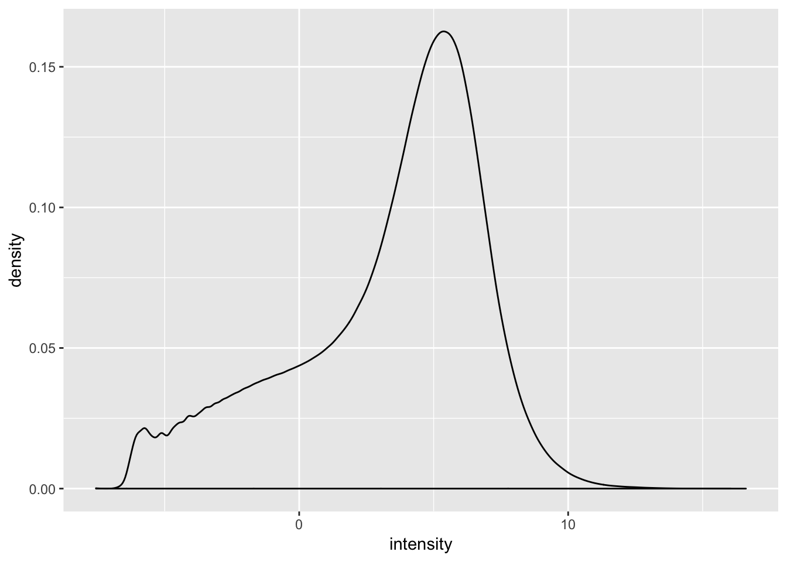
gbm_norm_cpm <- tidy_norm_cpm %>%
dplyr::filter(grepl("GBM*", group))
dplot_norm_gbm <- ggplot(gbm_norm_cpm, aes(intensity)) +
geom_density() +
theme(legend.position = "none") +
xlim(-6, 15)
dplot_norm_gbmWarning: Removed 163084 rows containing non-finite values (stat_density).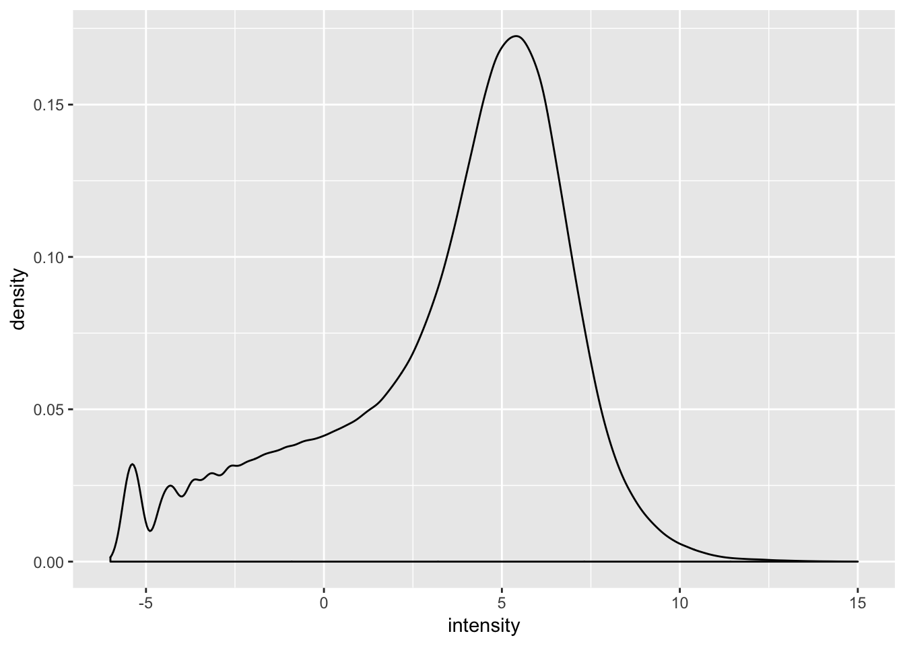
Will be done on cluster due to extreme system requirements Write out matrix and gene set lists for import into stats cluster.
# gset list
saveRDS(gset_ids_complete, "output/gset_ids_complete.rds")
expr_matrix <- total_log_cpm_filtered_norm %>%
as.matrix()
saveRDS(expr_matrix, "output/expr_matrix.rds")Get macrophage gene set GSVA scores
# Run on cluster
# tcga_es <- gsva(expr_matrix, gset_ids_complete,
# annotation = NULL,
# method = "gsva",
# mx.diff = FALSE,
# verbose = TRUE)
# saveRDS(tcga_es, "/gpfs/data/kline-lab/tcga_macs/tcga_es.rds")
# moved to local hard drive from cluster and stored in output folder# read in RDS from cluster
# tcga_es <- readRDS("output/tcga_es.rds")# temporary: read in CSV
tcga_es_csv <- read_csv("output/score_matrix.csv", col_names = TRUE)Parsed with column specification:
cols(
.default = col_double()
)See spec(...) for full column specifications.tcga_es_csv# A tibble: 14 x 11,093
BRCA1 BRCA2 BRCA3 BRCA4 BRCA5 BRCA6 BRCA7 BRCA8 BRCA9 BRCA10
<dbl> <dbl> <dbl> <dbl> <dbl> <dbl> <dbl> <dbl> <dbl> <dbl>
1 -0.304 -0.231 0.279 0.288 0.263 -0.447 -0.452 0.445 0.303 -0.461
2 0.385 -0.197 0.203 -0.211 0.254 -0.294 -0.479 0.368 -0.463 -0.377
3 0.305 -0.196 0.368 -0.253 0.325 -0.222 -0.298 0.454 -0.200 -0.273
4 0.232 -0.219 0.386 -0.463 0.297 -0.276 -0.291 0.252 0.177 -0.308
5 -0.317 -0.408 -0.211 -0.435 -0.295 -0.517 -0.605 -0.354 -0.274 -0.474
6 0.128 -0.441 0.536 -0.341 0.311 -0.475 -0.352 0.308 0.174 -0.327
7 0.269 -0.505 -0.238 -0.195 -0.351 -0.404 -0.562 0.193 -0.357 -0.512
8 -0.220 -0.491 0.466 0.164 -0.196 -0.496 -0.547 0.498 -0.267 -0.493
9 0.293 -0.498 0.516 0.499 0.505 -0.420 -0.237 0.726 0.457 0.135
10 0.260 -0.247 0.602 -0.250 -0.248 -0.405 -0.322 0.359 -0.264 -0.283
11 0.185 0.210 0.268 -0.230 -0.356 -0.266 -0.269 -0.249 -0.345 0.265
12 0.202 -0.531 0.513 0.387 0.260 -0.379 -0.247 0.556 0.369 -0.253
13 -0.347 -0.389 -0.236 0.279 -0.399 -0.353 -0.382 0.324 0.245 -0.301
14 0.153 -0.476 0.492 0.378 0.269 -0.377 -0.226 0.599 0.356 -0.367
# … with 11,083 more variables: BRCA11 <dbl>, BRCA12 <dbl>, BRCA13 <dbl>,
# BRCA14 <dbl>, BRCA15 <dbl>, BRCA16 <dbl>, BRCA17 <dbl>, BRCA18 <dbl>,
# BRCA19 <dbl>, BRCA20 <dbl>, BRCA21 <dbl>, BRCA22 <dbl>, BRCA23 <dbl>,
# BRCA24 <dbl>, BRCA25 <dbl>, BRCA26 <dbl>, BRCA27 <dbl>, BRCA28 <dbl>,
# BRCA29 <dbl>, BRCA30 <dbl>, BRCA31 <dbl>, BRCA32 <dbl>, BRCA33 <dbl>,
# BRCA34 <dbl>, BRCA35 <dbl>, BRCA36 <dbl>, BRCA37 <dbl>, BRCA38 <dbl>,
# BRCA39 <dbl>, BRCA40 <dbl>, BRCA41 <dbl>, BRCA42 <dbl>, BRCA43 <dbl>,
# BRCA44 <dbl>, BRCA45 <dbl>, BRCA46 <dbl>, BRCA47 <dbl>, BRCA48 <dbl>,
# BRCA49 <dbl>, BRCA50 <dbl>, BRCA51 <dbl>, BRCA52 <dbl>, BRCA53 <dbl>,
# BRCA54 <dbl>, BRCA55 <dbl>, BRCA56 <dbl>, BRCA57 <dbl>, BRCA58 <dbl>,
# BRCA59 <dbl>, BRCA60 <dbl>, BRCA61 <dbl>, BRCA62 <dbl>, BRCA63 <dbl>,
# BRCA64 <dbl>, BRCA65 <dbl>, BRCA66 <dbl>, BRCA67 <dbl>, BRCA68 <dbl>,
# BRCA69 <dbl>, BRCA70 <dbl>, BRCA71 <dbl>, BRCA72 <dbl>, BRCA73 <dbl>,
# BRCA74 <dbl>, BRCA75 <dbl>, BRCA76 <dbl>, BRCA77 <dbl>, BRCA78 <dbl>,
# BRCA79 <dbl>, BRCA80 <dbl>, BRCA81 <dbl>, BRCA82 <dbl>, BRCA83 <dbl>,
# BRCA84 <dbl>, BRCA85 <dbl>, BRCA86 <dbl>, BRCA87 <dbl>, BRCA88 <dbl>,
# BRCA89 <dbl>, BRCA90 <dbl>, BRCA91 <dbl>, BRCA92 <dbl>, BRCA93 <dbl>,
# BRCA94 <dbl>, BRCA95 <dbl>, BRCA96 <dbl>, BRCA97 <dbl>, BRCA98 <dbl>,
# BRCA99 <dbl>, BRCA100 <dbl>, BRCA101 <dbl>, BRCA102 <dbl>,
# BRCA103 <dbl>, BRCA104 <dbl>, BRCA105 <dbl>, BRCA106 <dbl>,
# BRCA107 <dbl>, BRCA108 <dbl>, BRCA109 <dbl>, BRCA110 <dbl>, …tcga_es_slice <- tcga_es_csv[1:7, ]
tcga_es_slice <- as.data.frame(tcga_es_slice)
rownames(tcga_es_slice) <- c("cluster1_up",
"cluster2_up",
"cluster3_up",
"cluster4_up",
"cluster5_up",
"cluster6_up",
"cluster7_up")
tcga_es_slice[1:5, 1:5] BRCA1 BRCA2 BRCA3 BRCA4 BRCA5
cluster1_up -0.3038360 -0.2311346 0.2787957 0.2878954 0.2630863
cluster2_up 0.3845835 -0.1967818 0.2032777 -0.2106304 0.2540838
cluster3_up 0.3045176 -0.1957608 0.3677508 -0.2527436 0.3254061
cluster4_up 0.2321848 -0.2194778 0.3857729 -0.4630314 0.2973114
cluster5_up -0.3165677 -0.4080791 -0.2108493 -0.4351221 -0.2945597tcga_es_tbl <- tcga_es_slice %>% rownames_to_column(var = "cluster") %>% as_tibble()
tcga_es_tbl# A tibble: 7 x 11,094
cluster BRCA1 BRCA2 BRCA3 BRCA4 BRCA5 BRCA6 BRCA7 BRCA8 BRCA9
<chr> <dbl> <dbl> <dbl> <dbl> <dbl> <dbl> <dbl> <dbl> <dbl>
1 cluste… -0.304 -0.231 0.279 0.288 0.263 -0.447 -0.452 0.445 0.303
2 cluste… 0.385 -0.197 0.203 -0.211 0.254 -0.294 -0.479 0.368 -0.463
3 cluste… 0.305 -0.196 0.368 -0.253 0.325 -0.222 -0.298 0.454 -0.200
4 cluste… 0.232 -0.219 0.386 -0.463 0.297 -0.276 -0.291 0.252 0.177
5 cluste… -0.317 -0.408 -0.211 -0.435 -0.295 -0.517 -0.605 -0.354 -0.274
6 cluste… 0.128 -0.441 0.536 -0.341 0.311 -0.475 -0.352 0.308 0.174
7 cluste… 0.269 -0.505 -0.238 -0.195 -0.351 -0.404 -0.562 0.193 -0.357
# … with 11,084 more variables: BRCA10 <dbl>, BRCA11 <dbl>, BRCA12 <dbl>,
# BRCA13 <dbl>, BRCA14 <dbl>, BRCA15 <dbl>, BRCA16 <dbl>, BRCA17 <dbl>,
# BRCA18 <dbl>, BRCA19 <dbl>, BRCA20 <dbl>, BRCA21 <dbl>, BRCA22 <dbl>,
# BRCA23 <dbl>, BRCA24 <dbl>, BRCA25 <dbl>, BRCA26 <dbl>, BRCA27 <dbl>,
# BRCA28 <dbl>, BRCA29 <dbl>, BRCA30 <dbl>, BRCA31 <dbl>, BRCA32 <dbl>,
# BRCA33 <dbl>, BRCA34 <dbl>, BRCA35 <dbl>, BRCA36 <dbl>, BRCA37 <dbl>,
# BRCA38 <dbl>, BRCA39 <dbl>, BRCA40 <dbl>, BRCA41 <dbl>, BRCA42 <dbl>,
# BRCA43 <dbl>, BRCA44 <dbl>, BRCA45 <dbl>, BRCA46 <dbl>, BRCA47 <dbl>,
# BRCA48 <dbl>, BRCA49 <dbl>, BRCA50 <dbl>, BRCA51 <dbl>, BRCA52 <dbl>,
# BRCA53 <dbl>, BRCA54 <dbl>, BRCA55 <dbl>, BRCA56 <dbl>, BRCA57 <dbl>,
# BRCA58 <dbl>, BRCA59 <dbl>, BRCA60 <dbl>, BRCA61 <dbl>, BRCA62 <dbl>,
# BRCA63 <dbl>, BRCA64 <dbl>, BRCA65 <dbl>, BRCA66 <dbl>, BRCA67 <dbl>,
# BRCA68 <dbl>, BRCA69 <dbl>, BRCA70 <dbl>, BRCA71 <dbl>, BRCA72 <dbl>,
# BRCA73 <dbl>, BRCA74 <dbl>, BRCA75 <dbl>, BRCA76 <dbl>, BRCA77 <dbl>,
# BRCA78 <dbl>, BRCA79 <dbl>, BRCA80 <dbl>, BRCA81 <dbl>, BRCA82 <dbl>,
# BRCA83 <dbl>, BRCA84 <dbl>, BRCA85 <dbl>, BRCA86 <dbl>, BRCA87 <dbl>,
# BRCA88 <dbl>, BRCA89 <dbl>, BRCA90 <dbl>, BRCA91 <dbl>, BRCA92 <dbl>,
# BRCA93 <dbl>, BRCA94 <dbl>, BRCA95 <dbl>, BRCA96 <dbl>, BRCA97 <dbl>,
# BRCA98 <dbl>, BRCA99 <dbl>, BRCA100 <dbl>, BRCA101 <dbl>,
# BRCA102 <dbl>, BRCA103 <dbl>, BRCA104 <dbl>, BRCA105 <dbl>,
# BRCA106 <dbl>, BRCA107 <dbl>, BRCA108 <dbl>, BRCA109 <dbl>, …Clean up group assignments
tcga_es_df <- tcga_es_tbl %>%
gather(key = "sampleID", value = "score", -cluster)
tidy_es <- tcga_es_df %>%
mutate(group = str_sub(sampleID, 1, 4)) %>%
mutate(group = ifelse(grepl("GBM*", group), "GBM", group)) %>%
mutate(group = ifelse(grepl("OV*", group), "OV", group)) %>%
mutate(group = ifelse(grepl("LGG*", group), "LGG", group)) %>%
mutate(group = ifelse(grepl("UVM*", group), "UVM", group)) %>%
mutate(group = ifelse(grepl("UCS*", group), "UCS", group)) %>%
mutate(group = ifelse(grepl("ACC*", group), "ACC", group)) %>%
mutate(group = as.factor(group))
# remove non-solid tumors
tidy_es <- tidy_es %>%
dplyr::filter(!group %in% c("THYM", "DLBC", "LAML")) %>%
mutate(group = fct_drop(group))
summary(tidy_es$group) ACC BLCA BRCA CESC ESCA GBM HNSC KICH KIRC KIRP LGG LIHC LUAD LUSC OV
553 3031 8554 2163 1211 1218 3822 623 4277 2247 3703 2968 4158 3857 7217
PAAD PCPG PRAD READ SARC SKCM STAD TGCT THCA UCS UVM
1274 1302 3857 1239 1855 3304 2849 1092 3976 4501 560 Remove non-tumor data and split metastatic from primary tumors Helper function from Kevin Blighe: https://www.biostars.org/p/318756/#318919
# Build a query of HTSeq files availble in GDC from TCGA
qfiles <- files() %>%
GenomicDataCommons::filter(~ cases.project.project_id == 'TCGA*' &
type == 'gene_expression' &
analysis.workflow_type =='HTSeq - Counts' )
# get a table of filenames and ids from the query
total_manifest <- manifest(qfiles)
# read in helper function
TCGAtranslateID = function(file_names, legacy = TRUE)
{
info = files(legacy = legacy) %>%
filter( ~ file_name %in% file_names) %>%
select('cases.samples.submitter_id') %>%
results_all()
id_list = lapply(info$cases,function(a)
{
a[[1]][[1]][[1]]
})
barcodes_per_file = sapply(id_list,length)
return(data.frame(file_id=rep(ids(info),barcodes_per_file), submitter_id=unlist(id_list), file_names=file_names))
}
file_table <- TCGAtranslateID(total_manifest$filename, legacy = FALSE) %>% as_tibble()
file_table# A tibble: 11,093 x 3
file_id submitter_id file_names
<fct> <fct> <fct>
1 e09d9ae2-b5b5-47ac-8d2… TCGA-23-1028-0… 56427511-2167-465f-bdde-689b895…
2 b02459dd-1f1d-4a66-a5d… TCGA-24-1923-0… 5327762f-5add-4008-ac5f-beca30e…
3 329ae6b7-3f35-4fb8-bf0… TCGA-24-1604-0… 9ac17699-409b-4750-9317-aacc8c0…
4 ff7edff0-bfb5-4520-b72… TCGA-13-0884-0… 25d6dd26-51c7-40dd-962a-c00abb7…
5 644e21d7-13c5-4239-bac… TCGA-29-1766-0… 65d87c44-cb1f-4889-bdfa-4788f71…
6 feb4ff14-7dcb-41a5-80d… TCGA-29-1710-0… 65ce7190-f1ef-496a-8e47-bcedd8d…
7 469769fc-b712-4bbd-981… TCGA-25-1631-0… 3769209b-a12f-4a84-9d68-0e1c934…
8 28b17bd0-672a-4a73-a82… TCGA-30-1853-0… de855db4-12d8-47bc-855b-96f61d3…
9 2e5423de-4c4c-4b74-a47… TCGA-31-1944-0… caa50267-cc68-4ccc-b506-49a89b1…
10 63381694-16d0-4c7a-b2d… TCGA-24-1567-0… 88f9c446-a966-4131-b379-63e3cc1…
# … with 11,083 more rows# read in kyle's TCGA metadata table
kyle_table <- read_tsv("data/kyle.gdc_tcga_bam_metadata.txt")Parsed with column specification:
cols(
cases_0_submitter_id = col_character(),
cases_0_case_id = col_character(),
data_type = col_character(),
cases_0_samples_0_sample_type = col_character(),
cases_0_samples_0_tissue_type = col_logical(),
file_name = col_character(),
cases_0_samples_0_submitter_id = col_character(),
cases_0_project_project_id = col_character(),
cases_0_samples_0_portions_0_analytes_0_aliquots_0_aliquot_id = col_character(),
cases_0_samples_0_sample_id = col_character(),
file_id = col_character(),
data_category = col_character(),
cases_0_samples_0_tumor_descriptor = col_logical(),
cases_0_samples_0_portions_0_analytes_0_aliquots_0_submitter_id = col_character(),
analysis_workflow_type = col_character()
)kyle_table <- kyle_table %>%
dplyr::rename(submitter_id = cases_0_samples_0_submitter_id) %>%
dplyr::select(-file_id)
lookup_table <- file_table %>%
left_join(kyle_table, by = "submitter_id") %>%
dplyr::select(submitter_id,
file_id,
project_id = cases_0_project_project_id,
sample_type = cases_0_samples_0_sample_type,
everything()) %>%
dplyr::select(-data_type,
-file_name,
-data_category,
-analysis_workflow_type)Warning: Column `submitter_id` joining factor and character vector,
coercing into character vectorqfile_results <- cases() %>% GenomicDataCommons::filter( ~ project.project_id == ’TCGA*’ & files.type == ‘gene_expression’ & files.analysis.workflow_type == ‘HTSeq - Counts’ ) %>% results()
library(ggsci)
library(ggpubr)
Attaching package: 'ggpubr'The following object is masked from 'package:GenomicDataCommons':
facetlibrary(ggbeeswarm)
tidy_es_c1 <- tidy_es %>% dplyr::filter(cluster == "cluster1_up")
c1plot <- ggplot(tidy_es_c1,
aes(x = fct_reorder(group, score, mean), y = score)) +
geom_quasirandom(alpha = 0.2) +
scale_fill_igv() +
stat_summary(fun.y = mean, fun.ymin = mean, fun.ymax = mean,
geom = "crossbar", width = 0.5, color = "red") +
theme_classic() +
theme(axis.text.x = element_text(angle = 90, hjust = 1)) +
xlab("TGCA tumor type") +
ylab("GSVA enrichment score") +
ggtitle("Macrophage Cluster 1: \"Alternate activation (M2)\"") +
geom_hline(yintercept = 0, linetype = "dashed")
c1plot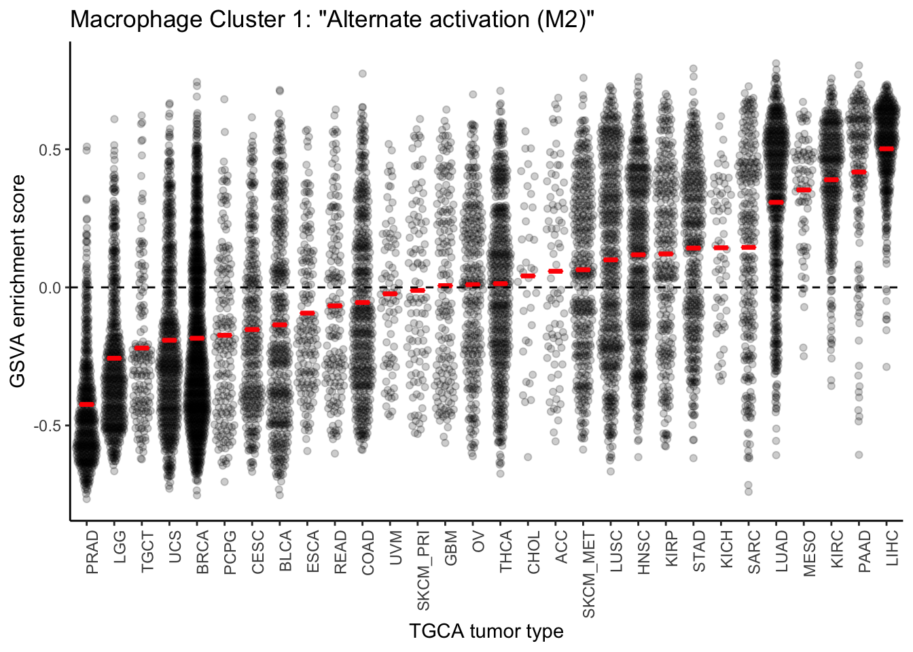
tidy_es_c2 <- tidy_es %>% dplyr::filter(cluster == "cluster2_up")
c2plot <- ggplot(tidy_es_c2,
aes(x = fct_reorder(group, score, mean), y = score)) +
geom_quasirandom(alpha = 0.2) +
scale_fill_igv() +
stat_summary(fun.y = mean, fun.ymin = mean, fun.ymax = mean,
geom = "crossbar", width = 0.5, color = "red") +
theme_classic() +
theme(axis.text.x = element_text(angle = 90, hjust = 1)) +
xlab("TGCA tumor type") +
ylab("GSVA enrichment score") +
ggtitle("Macrophage Cluster 2: \"Classical activation (M1)\"") +
geom_hline(yintercept = 0, linetype = "dashed")
c2plot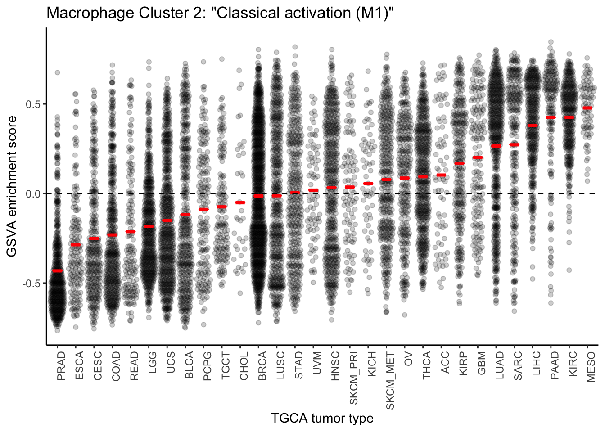
tidy_es_c3 <- tidy_es %>% dplyr::filter(cluster == "cluster3_up")
c3plot <- ggplot(tidy_es_c3,
aes(x = fct_reorder(group, score, mean), y = score)) +
geom_quasirandom(alpha = 0.2) +
scale_fill_igv() +
stat_summary(fun.y = mean, fun.ymin = mean, fun.ymax = mean,
geom = "crossbar", width = 0.5, color = "red") +
theme_classic() +
theme(axis.text.x = element_text(angle = 90, hjust = 1)) +
xlab("TGCA tumor type") +
ylab("GSVA enrichment score") +
ggtitle("Macrophage Cluster 3: \"Deactivated macrophages\"") +
geom_hline(yintercept = 0, linetype = "dashed")
c3plot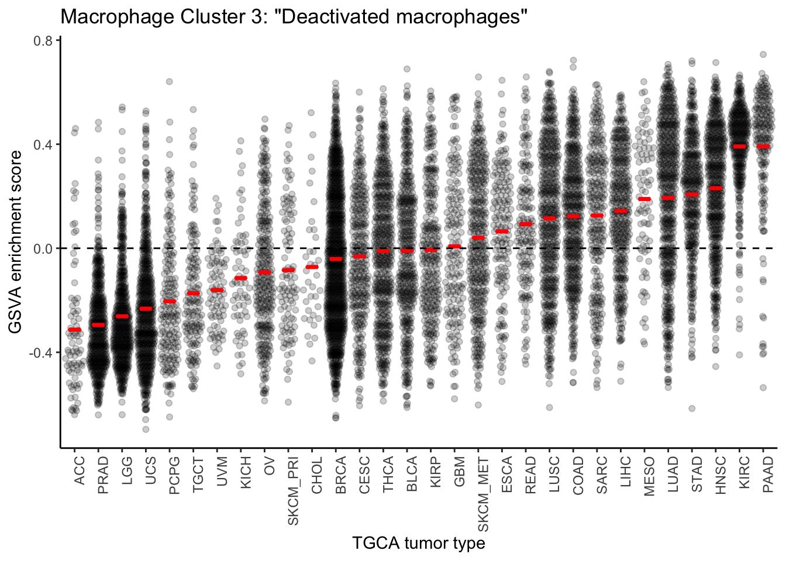
tidy_es_c4 <- tidy_es %>% dplyr::filter(cluster == "cluster4_up")
c4plot <- ggplot(tidy_es_c4,
aes(x = fct_reorder(group, score, mean), y = score)) +
geom_quasirandom(alpha = 0.2) +
scale_fill_igv() +
stat_summary(fun.y = mean, fun.ymin = mean, fun.ymax = mean,
geom = "crossbar", width = 0.5, color = "red") +
theme_classic() +
theme(axis.text.x = element_text(angle = 90, hjust = 1)) +
xlab("TGCA tumor type") +
ylab("GSVA enrichment score") +
ggtitle("Macrophage Cluster 4 \"Acute inflammation/migration\"") +
geom_hline(yintercept = 0, linetype = "dashed")
c4plot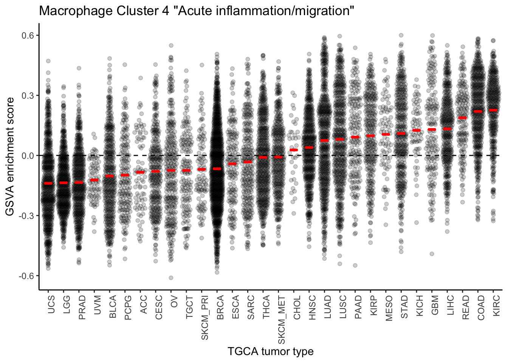
tidy_es_c5 <- tidy_es %>% dplyr::filter(cluster == "cluster5_up")
c5plot <- ggplot(tidy_es_c5,
aes(x = fct_reorder(group, score, mean), y = score)) +
geom_quasirandom(alpha = 0.2) +
scale_fill_igv() +
stat_summary(fun.y = mean, fun.ymin = mean, fun.ymax = mean,
geom = "crossbar", width = 0.5, color = "red") +
theme_classic() +
theme(axis.text.x = element_text(angle = 90, hjust = 1)) +
xlab("TGCA tumor type") +
ylab("GSVA enrichment score") +
ggtitle("Macrophage Cluster 5: \"Chronic wound\"") +
geom_hline(yintercept = 0, linetype = "dashed")
c5plot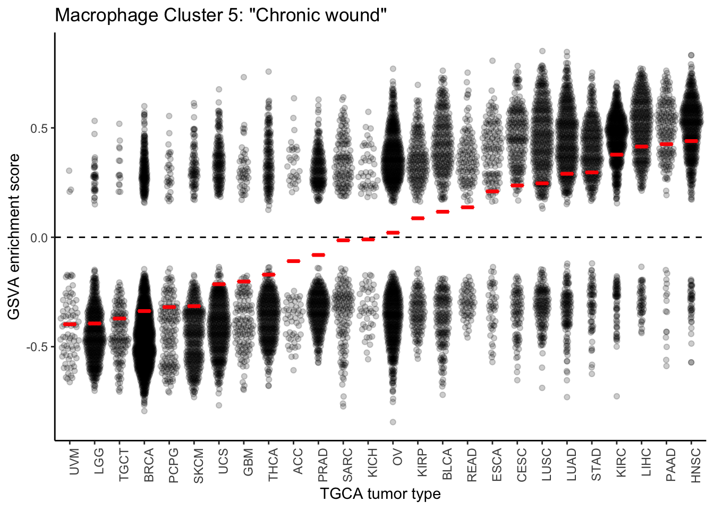
tidy_es_c6 <- tidy_es %>% dplyr::filter(cluster == "cluster6_up")
c6plot <- ggplot(tidy_es_c6,
aes(x = fct_reorder(group, score, mean), y = score)) +
geom_quasirandom(alpha = 0.2) +
scale_fill_igv() +
stat_summary(fun.y = mean, fun.ymin = mean, fun.ymax = mean,
geom = "crossbar", width = 0.5, color = "red") +
theme_classic() +
theme(axis.text.x = element_text(angle = 90, hjust = 1)) +
xlab("TGCA tumor type") +
ylab("GSVA enrichment score") +
ggtitle("Macrophage Cluster 6: \"Immunosuppresive macrophages\"") +
geom_hline(yintercept = 0, linetype = "dashed")
c6plot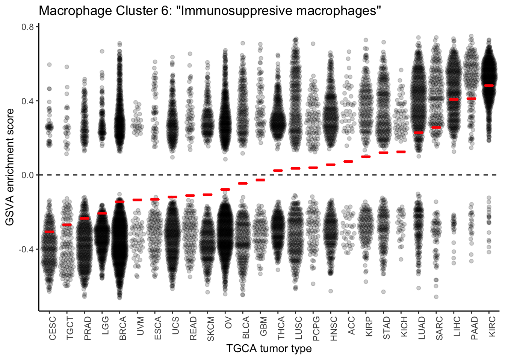
tidy_es_c7 <- tidy_es %>% dplyr::filter(cluster == "cluster7_up")
c7plot <- ggplot(tidy_es_c7,
aes(x = fct_reorder(group, score, mean), y = score)) +
geom_quasirandom(alpha = 0.2) +
scale_fill_igv() +
stat_summary(fun.y = mean, fun.ymin = mean, fun.ymax = mean,
geom = "crossbar", width = 0.5, color = "red") +
theme_classic() +
theme(axis.text.x = element_text(angle = 90, hjust = 1)) +
xlab("TGCA tumor type") +
ylab("GSVA enrichment score") +
ggtitle("Macrophage Cluster 7: \"Mixed immune response\"") +
geom_hline(yintercept = 0, linetype = "dashed")
c7plot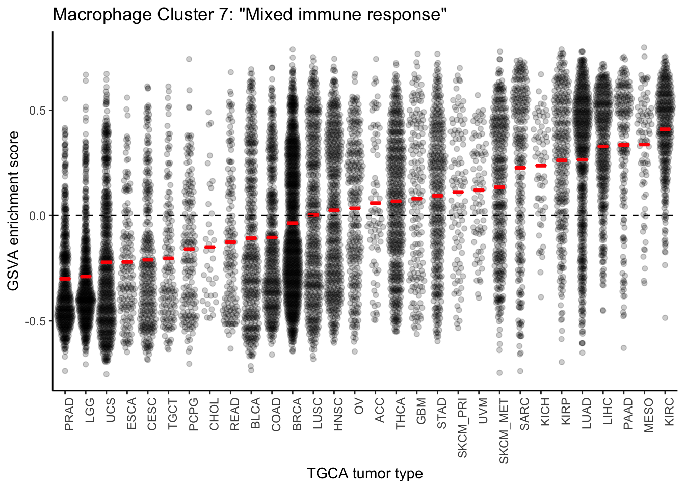
sessionInfo()R version 3.5.3 (2019-03-11)
Platform: x86_64-apple-darwin15.6.0 (64-bit)
Running under: macOS Mojave 10.14.4
Matrix products: default
BLAS: /Library/Frameworks/R.framework/Versions/3.5/Resources/lib/libRblas.0.dylib
LAPACK: /Library/Frameworks/R.framework/Versions/3.5/Resources/lib/libRlapack.dylib
locale:
[1] en_US.UTF-8/en_US.UTF-8/en_US.UTF-8/C/en_US.UTF-8/en_US.UTF-8
attached base packages:
[1] stats graphics grDevices utils datasets methods base
other attached packages:
[1] ggbeeswarm_0.6.0 ggpubr_0.2
[3] ggsci_2.9 GenomicDataCommons_1.6.0
[5] magrittr_1.5 GSVA_1.30.0
[7] edgeR_3.24.3 limma_3.38.3
[9] forcats_0.4.0 stringr_1.4.0
[11] dplyr_0.8.1 purrr_0.3.2
[13] readr_1.3.1 tidyr_0.8.3
[15] tibble_2.1.3 ggplot2_3.1.1
[17] tidyverse_1.2.1
loaded via a namespace (and not attached):
[1] nlme_3.1-140 matrixStats_0.54.0
[3] bitops_1.0-6 fs_1.3.1
[5] lubridate_1.7.4 bit64_0.9-7
[7] RColorBrewer_1.1-2 httr_1.4.0
[9] rprojroot_1.3-2 GenomeInfoDb_1.18.2
[11] tools_3.5.3 backports_1.1.4
[13] utf8_1.1.4 R6_2.4.0
[15] vipor_0.4.5 DBI_1.0.0
[17] lazyeval_0.2.2 BiocGenerics_0.28.0
[19] colorspace_1.4-1 withr_2.1.2
[21] tidyselect_0.2.5 curl_3.3
[23] bit_1.1-14 compiler_3.5.3
[25] git2r_0.25.2 graph_1.60.0
[27] cli_1.1.0 rvest_0.3.4
[29] Biobase_2.42.0 xml2_1.2.0
[31] DelayedArray_0.8.0 labeling_0.3
[33] scales_1.0.0 rappdirs_0.3.1
[35] digest_0.6.19 rmarkdown_1.13
[37] XVector_0.22.0 pkgconfig_2.0.2
[39] htmltools_0.3.6 rlang_0.3.4
[41] readxl_1.3.1 rstudioapi_0.10
[43] RSQLite_2.1.1 shiny_1.3.2
[45] generics_0.0.2 jsonlite_1.6
[47] BiocParallel_1.16.6 RCurl_1.95-4.12
[49] GenomeInfoDbData_1.2.0 Matrix_1.2-17
[51] fansi_0.4.0 Rcpp_1.0.1
[53] munsell_0.5.0 S4Vectors_0.20.1
[55] stringi_1.4.3 whisker_0.3-2
[57] yaml_2.2.0 SummarizedExperiment_1.12.0
[59] zlibbioc_1.28.0 plyr_1.8.4
[61] grid_3.5.3 blob_1.1.1
[63] parallel_3.5.3 promises_1.0.1
[65] crayon_1.3.4 lattice_0.20-38
[67] haven_2.1.0 annotate_1.60.1
[69] hms_0.4.2 locfit_1.5-9.1
[71] zeallot_0.1.0 knitr_1.23
[73] pillar_1.4.1 GenomicRanges_1.34.0
[75] geneplotter_1.60.0 stats4_3.5.3
[77] XML_3.98-1.20 glue_1.3.1
[79] evaluate_0.14 modelr_0.1.4
[81] vctrs_0.1.0 httpuv_1.5.1
[83] cellranger_1.1.0 gtable_0.3.0
[85] assertthat_0.2.1 xfun_0.7
[87] mime_0.6 xtable_1.8-4
[89] broom_0.5.2 later_0.8.0
[91] shinythemes_1.1.2 beeswarm_0.2.3
[93] AnnotationDbi_1.44.0 memoise_1.1.0
[95] IRanges_2.16.0 workflowr_1.4.0
[97] ellipsis_0.1.0 GSEABase_1.44.0